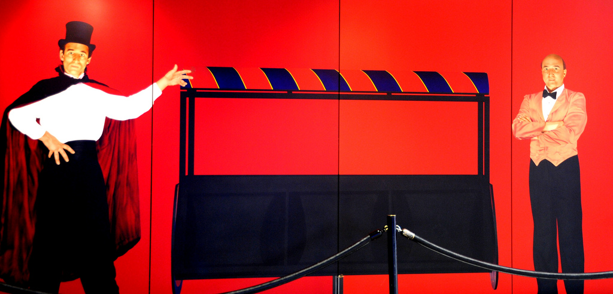
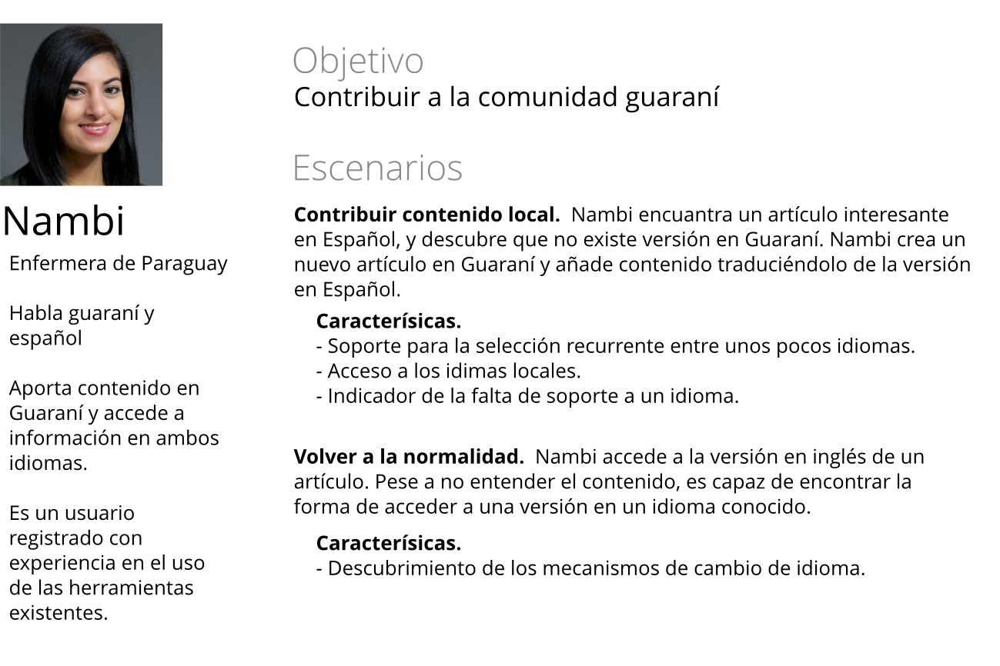

Identificar a los usuarios
Experiencia de Usuario en Aplicaciones Móviles
Identificar a los usuarios:
User research y Personas

User research
Entender a los usuarios antes de resolver sus problemas
Técnicas
- Entrevistas y cuestionarios
- Observación directa
- Card sorting
- y muchas más...
Entrevistas y cuestionarios

¿Qué preguntar?
Las preguntas deben tratar de:
- Entender el comportamiento del usuario
- Identificar los problemas (incluso si llean en forma de soluciones)
- Evitar influir en las respuestas
Observación directa

Actuar como observador/aprendiz
¿Qué observar?
- Flujos de trabajo
- Atajos, y "soluciones creativas"
- Usos no previstos de las herramientas
- Quejas
Card sorting

Objetivo según tipo:
- Abierto: identificar categorías.
- Cerrado: comprobar categorías
Ejemplo: agrupa los siguientes elementos
- Manzana
- Cocinar
- Tres personas han probado la receta
- Exprimir un limón
- Compartir una receta
- Verter la masa en el molde
- Remover 30 minutos
- Buscar recetas vegetarianas
- Mantequilla
- A Pedro le gusta tu plato
Actividad: Piensa 3 preguntas a hacerle a tus usuarios
Opcionalmente para tu proyecto puedes realizar las entrevistas y/o aplicar otras de las técnicas vistas.
Personas

Cada usuario tiene sus necesidades

Ayudan a enfocar el diseño
Debemos elegir:
- Persona principal
- 1-3 personas secundarias.
- Opcionalmente otros no-usuarios: cliente, implicado (e.g., paciente), persona negativa.
Ayudan a evaluar los diseños


Definir personas
- Datos demográficos
- Objetivos → Escenarios → Características del producto
Datos demográficos
No se trata de inventar usuarios
Deben basarse en comportamientos observados.
Variables de comportamiento


Objetivos
Distingue soluciones (mapa), de necesidades (llegar desde A hasta B)
Objetivos
Escenarios y características
Piensa en el qué antes que el cómo
- Imagina que la interfaz es mágica
- Imagina que la interfaz se comporta cómo un atento asistente
Ejemplo de persona
Actividad: Define dos personas para tu proyecto
- Identifica variables de comportamiento
- Define un conjunto inicial de personas que cubran las variables
- Propón escenarios
- Analiza características del sistema
Modelos mentales

Alinear sluciones con comportamientos

Material relacionado
About Face 3
Alan Cooper, Robert reimann, and David Cronin. Willey, 2007.
Observing the User Experience: A Practitioner's Guide to User Research
Morgan Kaufmann, 2003.

Undercover User Experience Design
Cennydd Bowles and James Box, 2010.
Mental models
Indy Young. Rosenfeld